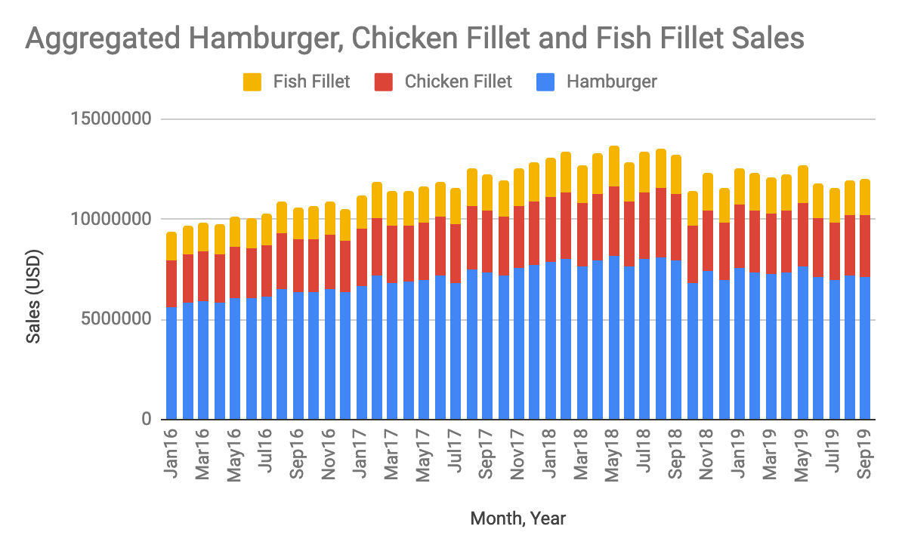
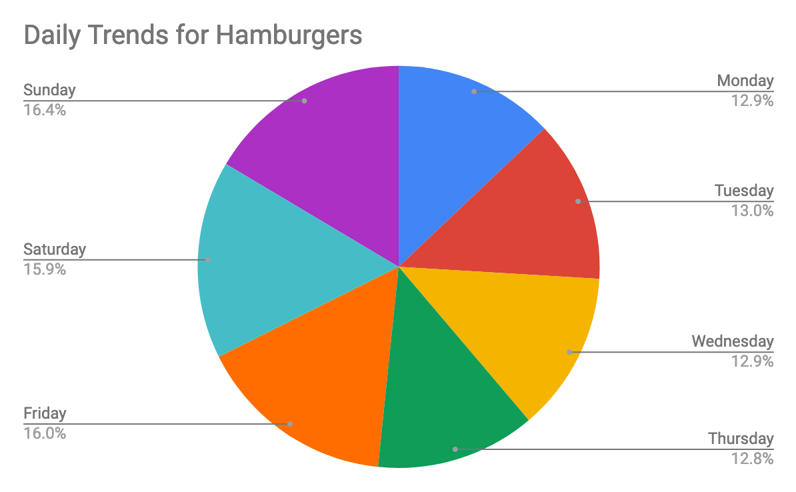

Overview
Here you can see the trends from each of the three food items. Hamburgers clearly make up a
bulk of the sales, even in the dip seen on October 2018 (attributed to the introduction of the Impossible Burger). Hamburgers continue to make up over 50% of sales when only considering
these three food items.

Regional
Diving into just hamburger sales, we can see that hamburgers sell equally well in all regions of the US. This 20 month
snapshot shows that when growth happens, it happens equally across all regions. We are now seeing growth in sales after
the dip in October 2018, with hamburger sales increasing all over the country. The plateau in recent sales, however, causes
some concern, as does the fact that sales have only once crossed a total of 7.5 million dollars since the introduction of the
Impossible burger.

Daily Trends
Looking at aggregated daily trends, we can see very clearly that hamburgers experience a spike in sales on Friday, Saturday
and Sunday, with sales on those three days making up almost 50% of total sales. In comparison to other regions, the South West
sees a larger spike in sales on Friday, so a suggestion for further exploration would be to incoporate hamburger sales tactics for
just the South West, so as to leverage the increase in sales in that area.

white space
Focusing on the same aggregated daily trends for Fish Fillet, we can see interesting regional patterns. The North East experiences
spikes in sales on Thursday and Sunday, while all other regions experience a spike on Fridays, with the Central region being the most
notable. These trends could be used to form a business plan in order to bolster Fish Fillet sales, which would appeal to a different market
than those who enjoy Impossible burgers.